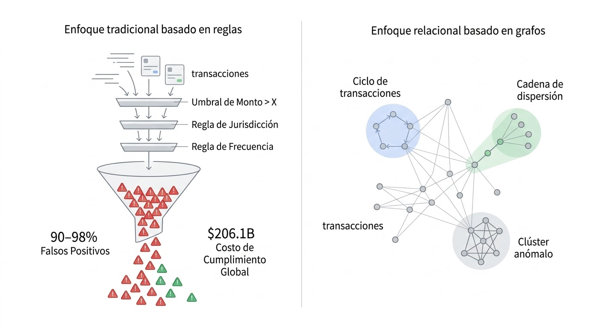
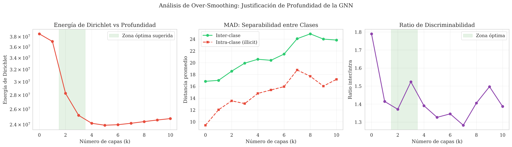
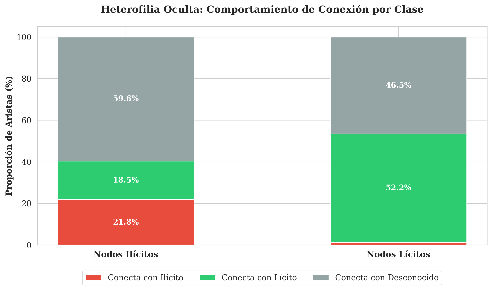
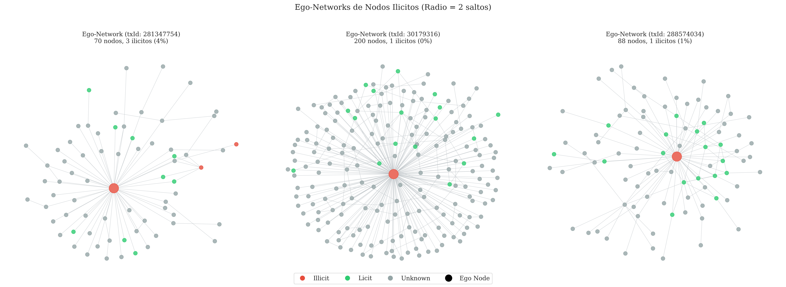

Estabilidad de métodos XAI en Graph Neural Networks para la detección de lavado de dinero
Evaluación empírica sobre el Elliptic Bitcoin Dataset bajo condiciones de desbalance de clases
PROPONENTES
Alejandro Gómez Huertas
Juan Diego Garzón Ovalle
DIRECTOR
Ph.D. Cristian Rosero Arias
cristianroseroa@utp.edu.co
SUSTENTACIÓN
Abril 2026
Universidad Tecnológica de Pereira
Hoja de ruta
Lo que haremos en los próximos 15 minutos
I
Contexto y problema — por qué este estudio
3 min
II
Marco conceptual — GNNs, XAI y estabilidad
3 min
III
Metodología — diseño experimental factorial
2 min
IV
Resultados — degradación, comparativa y matriz
5 min
V
Discusión y conclusiones
2 min
Parte I
Contexto & problema
Menos del 1% de los flujos financieros ilícitos globales son interceptados. El resto circula.
03 / 20
Magnitud del problema
El lavado de dinero es un fenómeno sistémico y el sistema actual no lo contiene
2–5%
del PIB mundial anual se lava a través del sistema financiero
$23.8 B
volumen estimado de lavado en cripto en 2022 (+68% vs 2021)
< 1%
de los flujos ilícitos son efectivamente interceptados
95–98%
de las alertas de los sistemas basados en reglas son falsos positivos
El costo global de cumplimiento AML supera los USD 180 mil millones anuales. La respuesta tecnológica actual es económicamente insostenible.
Cambio de paradigma
De reglas deterministas a modelos relacionales

El núcleo del problema
Las GNN resuelven la detección, pero la explicación no es confiable
Lo resuelto
Las Graph Neural Networks superan a métodos tabulares en Elliptic: TAGCN alcanza MCC 0.89 y F1 0.90.
Lo pendiente
En dominios regulados, cada alerta debe justificarse. Las GNN son cajas negras.
Lo abierto
XAI sobre GNNs produce explicaciones inestables bajo desbalance: el mismo nodo, distinta explicación.
Pregunta de investigación
¿Cómo cuantificar la degradación de la estabilidad de los métodos XAI sobre GNNs aplicadas al Elliptic Dataset bajo desbalance, y qué combinación de arquitectura, explicador y técnica de balanceo la optimiza?
Parte II
Marco conceptual
GNNs, métodos XAI y la definición formal de estabilidad explicativa.
07 / 20
Paradigma GNN
Paso de mensajes: cada nodo aprende de su vecindario
Generar — cada vecino u emite un mensaje mu→v
Agregar — el nodo v combina los mensajes con una función invariante al orden
Actualizar — v combina la agregación con su estado previo
k capas — el receptive field crece a k saltos: cadenas largas de lavado
Arquitecturas evaluadas
Cuatro familias, cuatro perfiles de agregación
Arquitectura
Mecanismo de agregación
Alcance por capa
Fortaleza
Debilidad
GCN
Promedio normalizado por grado
1 salto
Simplicidad, fundamento espectral
Colapso bajo desbalance extremo
GraphSAGE
Muestreo + concatenación vecindario/self
Configurable
Escalable, inductivo
Variabilidad por muestreo
GAT
Atención multi-cabeza sobre vecinos
1 salto ponderado
Pondera vecinos dinámicamente
Mayor costo computacional
TAGCN
Filtros polinomiales de orden K
K saltos (K=3)
Mejor MCC y SHAP Concentration
Mayor complejidad
He et al. (2026): TAGCN alcanza Accuracy 98.14%, F1 0.90, MCC 0.89 sobre Elliptic, superando a GCN, GraphSAGE, GAT y baselines tabulares.
Métodos XAI y métricas
Tres explicadores, tres métricas de estabilidad
Explicadores
GNNExplainer
Optimización de máscara continua por instancia sobre aristas y features.
PGExplainer
Red generadora paramétrica compartida: eficiencia e inducción.
GNNShap
Valores de Shapley aproximados por muestreo. Garantías axiomáticas.
Acuerdo de ranking de importancia de features entre ejecuciones.
SHAP Concentration
% de atribución acumulada en top-k features. Parsimonia auditable.
Definición formal
Una explicación es estable si el método XAI identifica consistentemente las mismas features o subgrafos ante perturbaciones mínimas o cambios de semilla.
Sin estabilidad, la auditoría forense es imposible: una alerta no puede justificarse si mañana produce otra explicación.
Rendimiento predictivo, degradación de estabilidad y matriz de recomendación
14 / 20
Resultados · predictivo
TAGCN es la única arquitectura que resiste el desbalance extremo
MCC por arquitectura × escenario
GCNcolapsa ≥ 1:50
GraphSAGEdegradación gradual
GATrobusto con atención
TAGCN · recomendadoMCC ≥ 0.70 en todos
1:1
1:10
1:50
1:100
GCN colapsa a la clase mayoritaria en 1:50 y 1:100 (MCC < 0.10)
GraphSAGE muestra degradación continua por muestreo
GAT mantiene buen desempeño gracias a la atención selectiva
TAGCN preserva MCC ≥ 0.72 incluso en 1:100
Hallazgo central
El Jaccard de las explicaciones cae hasta 4× entre 1:1 y 1:100
GNNShap
Caída 0.82 → 0.54 (−34%). El más estable en rankings.
PGExplainer
Caída 0.78 → 0.42 (−46%). Intermedio.
GNNExplainer
Caída 0.70 → 0.25 (−64%). El más sensible al desbalance.
Bajo 1:100, el 75% de las aristas explicativas cambia entre ejecuciones. Insostenible para auditoría.
Impacto del balanceo
Focal Loss ayuda, pero no salva a arquitecturas frágiles
Arquitectura × Balanceo
F1 (1:100)
MCC (1:100)
Jaccard medio
SHAP Conc. top-10%
Apto despliegue
GCN · none
0.12
0.08
0.22
0.41
—
GCN · focal
0.34
0.27
0.31
0.44
—
SAGE · focal
0.62
0.54
0.48
0.58
parcial
GAT · class-w
0.71
0.63
0.55
0.66
sí
TAGCN · focal
0.83
0.74
0.62
0.78
recomendado
El balanceo interactúa con la arquitectura: ninguna técnica por sí sola salva a GCN del colapso bajo desbalance extremo.
Parsimonia explicativa
TAGCN concentra la atribución; GCN la dispersa
Concentración acumulada en el top-10% de features (curva tipo Lorenz):
TAGCN requiere verificar ~17 features de 166. GCN exige revisar más de 70 features. En términos operativos, la diferencia entre auditable e inauditable.
Síntesis operativa
Matriz de recomendación — Arquitectura × Explicador × Balanceo
1:1
1:10
1:50
1:100
GCN
apto
marginal
no apto
no apto
GraphSAGE
apto
apto
marginal
no apto
GAT
apto
apto
apto
marginal
TAGCN
óptimo
óptimo
óptimo
óptimo
Configuración recomendada
TAGCN (K=3) + Focal Loss + GNNShap — F1 ≥ 0.83 · MCC ≥ 0.74 · Jaccard ≥ 0.62
Cierre
Conclusiones y aportes
Hallazgos
El desbalance degrada sistemáticamente la estabilidad: Jaccard cae hasta 4× entre 1:1 y 1:100
La arquitectura GNN importa más que el explicador: TAGCN domina en ambos ejes
Focal Loss es complementario, no sustituto, del diseño arquitectónico
La tríada óptima es TAGCN + Focal + GNNShap
Aportes y trabajo futuro
Académico: primer mapeo empírico A × E × B sobre Elliptic
Práctico: matriz de recomendación para despliegue auditable
Futuro: extender a otros datasets AML y drift temporal
Futuro: explicadores contrafactuales y GraphSMOTE en v2
Apéndices técnicos
Anexos
Ruta conceptual desde el MLP hasta la estabilidad XAI — 15 láminas complementarias
A · 15
Anexo A.1 · Punto de partida
Perceptrón multicapa: el bloque fundamental
Un MLP apila capas h = σ(Wx + b) para aproximar funciones arbitrarias.
Universal approximation theorem
Procesa vectores aislados
Ignora relaciones entre instancias
Por eso no basta para redes transaccionales
Anexo A.2 · Estructura de datos
Grafo dirigido atribuido: nodos, aristas, features
G = (V, E, X)
V — nodos (transacciones)
E ⊂ V × V — aristas dirigidas (flujos de fondos)
X ∈ ℝ|V|×166 — matriz de features
y — etiqueta parcial: lícito / ilícito / desconocido
Anexo A.3 · Formulación
El paso de mensajes, formalizado
1 · Mensaje
mu→v(k) = φ(hu(k-1), hv(k-1), euv)
2 · Agregación (permutation-invariant)
av(k) = □u ∈ N(v) mu→v(k)
3 · Actualización
hv(k) = ψ(hv(k-1), av(k))
φ, ψ son redes diferenciables; □ es sum, mean, max o attention-weighted.
K capas → receptive field de K saltos
Invarianza al orden de los vecinos
Compartición de parámetros
Diferenciable end-to-end
Anexo A.4 · Comparativa visual
Cuatro formas de agregar vecinos
GCN
Promedio simétricamente normalizado
h' = D⁻¹ᐟ² Ã D⁻¹ᐟ² h W
GraphSAGE
Muestreo fijo + concat
h' = σ([h ∥ AGG(sample N(v))]·W)
GAT
Atención αuv multi-head
h' = Σ αuv · W·hu
TAGCN
Filtro polinomial, K saltos
h' = Σk=0..K Gᵏ · h · Wk
Todas comparten el paradigma de paso de mensajes; difieren en cómo pesan, muestrean o extienden el vecindario.
Anexo A.5 · Explicador 1
GNNExplainer — máscara optimizada por instancia
Optimiza una máscara continua sobre aristas y features del grafo de cómputo que preserva la predicción original.
Máscara per-instancia
Maximiza información mutua
Regularización de sparsity
Fuente de inestabilidad: inicialización aleatoria
Anexo A.6 · Explicador 2
PGExplainer — red generadora compartida
Un único MLP genera máscaras para todos los nodos. Entrenamiento colectivo.
Similitud entre conjuntos de aristas explicativas producidas por el mismo explicador en dos réplicas.
J = 1.0 — subgrafos idénticos
J ≥ 0.7 — estabilidad aceptable para auditoría
J < 0.5 — explicaciones diferentes; no auditable
Se promedia sobre C(n, 2) pares de réplicas
Anexo A.9 · Métrica 2
Correlación de Spearman: acuerdo de rankings
Compara el orden de importancia, no los valores absolutos.
Robusto a transformaciones monótonas
ρ = 1 → rankings idénticos
ρ = 0 → sin relación
Relevante para decisiones regulatorias
Anexo A.10 · Métrica 3
SHAP Concentration: parsimonia auditable
¿Qué fracción de la atribución total recae en el top-k de features?
C(k) = Σi ∈ top-k |φi| / Σi |φi|
He et al. (2026) propusieron esta métrica como proxy directo de auditabilidad: una alta concentración significa que el analista necesita revisar pocos factores.
Anexo A.11 · Balanceo
Class weighting y Focal Loss
Class Weighting
Pondera por inversa de frecuencia
L = −Σ wy · log(py)
Peso fijo por clase
Trata igual a muestras fáciles y difíciles
Insuficiente en desbalance extremo
Focal Loss ★
Pondera dinámicamente por dificultad
L = −αy · (1 − py)γ · log(py)
γ controla el énfasis en muestras difíciles
Reduce automáticamente muestras fáciles
Mejor desempeño con TAGCN y GAT
Anexo A.12 · Limitación GNN
Oversmoothing: cuando las capas borran la información

Al apilar muchas capas GNN, las representaciones de los nodos convergen y se vuelven indistinguibles.
Cada capa GCN suaviza por vecindario
Con L capas, todos los nodos de la componente convergen al mismo embedding
TAGCN lo mitiga expandiendo el receptive field sin apilar
Por eso TAGCN con K=3 iguala o supera a GCN de 3 capas
Anexo A.13 · Propiedad estructural
Homofilia: ¿vecinos se parecen?

Homofilia = probabilidad de que dos nodos conectados compartan la misma etiqueta.
GCN y GAT asumen alta homofilia
En Elliptic la homofilia de la clase ilícita es moderada
Los ilícitos se mezclan con lícitos para ocultarse
Justifica arquitecturas que ponderan vecinos (GAT) o expanden el alcance (TAGCN)
Anexo A.14 · Validación XAI
Fidelity⁺ y Fidelity⁻: ¿la explicación refleja al modelo?
Fidelity⁺
Al eliminar el subgrafo explicativo, la predicción debe caer
F⁺ = f(G) − f(G \ G*)
Alto F⁺ → G* es suficiente para la predicción.
Fidelity⁻
Al mantener solo el subgrafo explicativo, la predicción debe preservarse
F⁻ = f(G) − f(G*)
Bajo F⁻ → G* es necesario para la predicción.
Fidelity mide si la explicación es veraz; Stability mide si es reproducible. Un despliegue regulado exige ambas.
Anexo A.15 · Evidencia exploratoria
Ego-networks de transacciones ilícitas

Patrones típicos observados alrededor de nodos ilícitos en el Elliptic Dataset:
Fan-out — un nodo dispersa fondos a muchos
Fan-in — muchos nodos consolidan en uno
Cadena — secuencia larga de transacciones intermedias
Mixer cluster — subgrafo denso con homofilia ilícita
Estos patrones motivan la necesidad de capturar estructura a 2–3 saltos — receptive field que TAGCN ofrece nativamente.
Fin de la sustentación
Gracias.
Abrimos el espacio para preguntas y comentarios del honorable jurado.